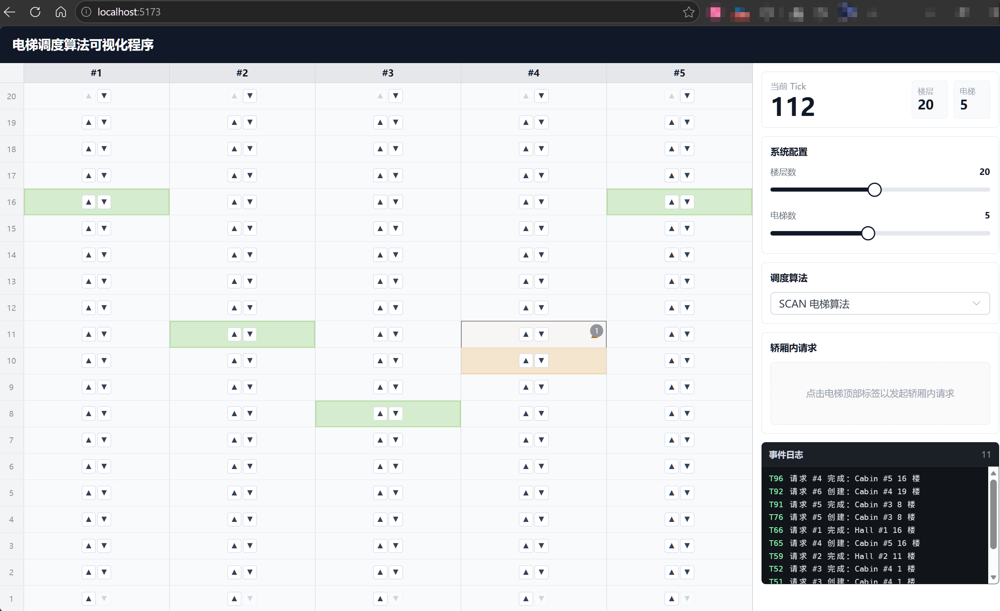

电梯调度算法可视化程序
摘要
本项目实现了一个面向操作系统课程的电梯调度算法可视化系统。系统以多部电梯共享楼层请求为基本场景，将乘客请求类比为待调度任务，将电梯类比为资源执行单元，由调度器决定请求分配，并由每部电梯的独立 goroutine 推进运行状态。后端使用 Go 标准库 net/http 提供 API，使用 SQLite 保存已完成请求；前端使用 Vue 3、Element Plus 与 Vite 实现可交互的楼层请求、轿厢请求、算法切换和运行日志展示。
1. 项目概述
1.1 项目背景
电梯调度问题是操作系统调度问题的一个直观类比：多部电梯对应多个可执行资源，楼层请求和轿厢内请求对应等待被处理的任务，调度算法需要在公平性、响应速度和资源利用率之间作出权衡。本项目以一栋默认 20 层、5 部电梯的大楼为基础场景，但在实现上将楼层数、电梯数和运行节奏设计为可配置参数，便于测试不同规模下的调度行为。
与只实现单个算法的命令行模拟程序不同，本项目同时关注“算法执行过程是否可观察”和“并发模型是否清晰”。因此系统提供 Web 可视化界面，支持在前端直接发起 hall 请求、cabin 请求、紧急制动和调度算法切换，后端持续推进离散 tick，并将当前系统状态通过 HTTP API 暴露给前端。
1.2 项目目标
- 实现一个可运行的多电梯调度系统，支持楼层外部请求、轿厢内部请求和电梯状态展示。
- 实现并切换多种调度算法，包括 First Available、Nearest Idle、FCFS、SCAN 和 LOOK。
- 使用 Go 的 goroutine 和 channel 表达“每部电梯作为独立执行单元”的并发模型。
- 通过 HTTP API 和 Vue 前端完成前后端通信，并将调度过程可视化。
- 使用 SQLite 保存已完成请求，为后续算法统计和实验对比提供数据来源。
1.3 系统运行流程
系统启动后，后端创建 System 实例和电梯运行 goroutine，并由自动 ticker 周期性调用 Step() 推进模拟时间。前端页面通过轮询 GET /api/state 获取系统快照，用户在界面中点击楼层按钮或提交轿厢请求后，前端向后端发送 HTTP 请求，后端将请求写入运行态数据结构，再由当前调度器在后续 tick 中完成分配。
1.4 技术栈与运行方式
| 模块 | 技术选择 | 说明 |
|---|---|---|
| 后端语言 | Go | 利用 goroutine、channel 和 sync.Mutex 实现并发模型与状态同步。 |
| HTTP 服务 | net/http |
使用 Go 标准库实现 REST API |
| 数据持久化 | SQLite | 单文件数据库，简单轻便，方便数据统计。 |
| 前端 | Vue 3 + Element Plus + Vite | 用于构建交互式可视化界面，Vite dev proxy 用于开发环境 API 转发。 |
| 环境封装 | Docker Compose | 同时启动后端和前端，便于在不同机器上复现运行环境。 |
Docker 版本启动方式（推荐）
docker compose up启动成功后访问前端页面：
http://localhost:5173后端 API 默认监听：
http://localhost:8080普通本机启动方式
# 启动后端
go run ./cmd/server
# 另开终端启动前端
cd web
npm install
npm run dev
2. 系统设计与实现
2.1 系统架构概览
系统采用前后端分离但部署简单的结构。前端负责渲染大楼、电梯、请求按钮和配置面板；后端负责维护状态，所有请求创建、调度算法切换、系统重启和紧急制动均通过 API 进入后端。调度层不直接处理 HTTP，而是围绕 System、Request、Elevator 和 Scheduler 等核心类型实现业务逻辑。
| 层次 | 主要文件或目录 | 职责 |
|---|---|---|
| 程序入口 | cmd/server/main.go |
创建系统配置、初始化电梯系统、启动自动 tick、注册 HTTP 路由。 |
| API 层 | internal/api/handler.go |
接收前端请求，完成 JSON 解码、输入校验、系统调用和响应编码。 |
| 核心模型 | internal/elevator/model.go、system.go |
定义电梯、请求、停靠计划和系统状态，并提供状态推进方法。 |
| 调度层 | internal/elevator/*Scheduler.go |
实现不同调度策略，统一通过 Scheduler 接口调用。 |
| 电梯运行层 | internal/elevator/elevator_runner.go |
每部电梯使用独立 goroutine 接收 tick 命令并计算下一状态。 |
| 持久化层 | internal/elevator/request_store.go |
将完成请求写入 SQLite，供后续统计和算法对比使用。 |
| 前端 | web/src |
实现状态轮询、请求提交、控制面板、日志终端和可视化布局。 |
调度算法和电梯运行逻辑都位于后端核心模型中，前端只通过 API 操作系统状态，不会复制调度逻辑；SQLite 只记录历史数据，不参与每个 tick 的关键路径，因此不会影响运行态调度性能。
2.2 项目结构
os_sp26_proj1/
├── cmd/server/ # Go 服务入口
├── internal/api/ # HTTP API handler 与自动步进逻辑
├── internal/elevator/ # 电梯模型、调度算法、并发运行、SQLite 持久化
├── web/ # Vue 3 + Element Plus + Vite 前端
├── docs/ # 开发记录、设计文档和最终报告
├── analysis/ # 调度实验与图表输出
├── scripts/ # 本地分析脚本
├── data/ # 运行时生成的 SQLite 数据库
├── img/ # README 和报告使用的图片资源
└── docker-compose.yml # Docker Compose 启动配置
Go 项目中 internal 目录表示内部包，不希望被仓库外部直接导入。该结构使 API 层和电梯核心模型在同一后端项目中保持清晰边界：internal/api 关心 HTTP 输入输出，internal/elevator 关心调度和状态推进。
2.3 核心数据模型
系统的核心数据模型围绕请求、停靠计划、电梯和系统四类对象展开：
| 类型 | 关键字段 | 设计说明 |
|---|---|---|
Direction |
idle、up、down |
统一描述电梯运动方向和请求方向。 |
Request |
ID、Floor、Kind、Status |
表示 hall 或 cabin 请求，状态包括 pending、assigned、done。 |
StopPlan |
Floor、Reason、RequestIDs |
描述一次停靠及其原因，同一停靠可完成多个请求。 |
Elevator |
CurrentFloor、Direction、Stops |
保存单部电梯当前状态、后续停靠计划和门/移动倒计时。 |
System |
Elevators、Requests、CurrentTick |
保存全局运行态状态，是调度器和 API 共同操作的核心对象。 |
2.3.1 请求状态与运行态存储
Requests map[int64]*Request 只保存 pending 和 assigned 状态的请求。请求完成后会被 completeRequest 标记为 done，写入 SQLite，然后从运行态 map 中删除。这样可以保持运行态数据结构轻量，同时保留完整历史记录用于实验统计。
2.3.2 hall 请求与 cabin 请求
hall 请求来自楼层外部，需要由调度算法决定分配给哪部电梯；cabin 请求来自某部电梯内部，属于指定电梯，在 AddRequest 中直接分配给对应电梯，不进入 pending 状态。这一区分避免了“某部电梯内部按下目标楼层，却被调度器分配给另一部电梯”的错误。
2.3.3 停靠计划 StopPlan
StopPlan 用来替代早期的目标楼层整数列表。只保存 []int 时，同一楼层的上行 hall 请求、下行 hall 请求和 cabin 目标很容易被错误合并；而 StopPlan 同时记录 Floor、Reason、Direction 和 RequestIDs，可以准确表达“为什么停”和“这一站完成哪些请求”。
2.3.4 时间片与运行节奏
系统使用 CurrentTick 作为全局离散时钟，请求创建、分配和完成都记录 tick，而不是直接依赖真实时间。TicksPerFloor、DoorBaseTicks 和 TickPerPassenger 等常量用于描述移动一层、开门停留和乘客上下行所消耗的模拟时间；自动推进间隔则由后端 ticker 控制，当前默认每 250ms 推进一个 tick。
2.3.5 电梯状态与紧急制动
Elevator 同时保存运行位置、运动方向、扫描方向、门状态、移动倒计时、开门倒计时和紧急制动状态。当前端触发紧急制动后，后端将指定电梯设置为 EmergencyStop，并设置 EmergencyRemainingTicks；后续每个 tick 中，该电梯保持 idle，直到倒计时归零后自动恢复运行。这个设计与移动耗时、开门停留一样，都是电梯运行状态机的一部分。
2.4 HTTP API 设计
后端 API 采用 JSON 作为请求和响应格式。所有会修改系统状态的接口使用 POST，只读接口使用 GET。handler 层会拒绝不匹配的方法、非法 JSON、未知字段和不合法业务参数。
| 方法 | 路径 | 功能 |
|---|---|---|
| GET | /api/health | 健康检查，返回服务是否可用。 |
| GET | /api/config | 返回前端轮询和展示所需配置，如自动 tick 间隔、移动耗时、开门耗时和紧急制动 tick 数。 |
| GET | /api/state | 返回完整系统快照，包括楼层数、电梯状态、运行态请求和当前调度算法。 |
| POST | /api/request | 创建 hall 或 cabin 请求。 |
| POST | /api/scheduler | 切换调度算法，并重建系统运行周期。 |
| POST | /api/floor-count | 调整楼层数，重启系统。 |
| POST | /api/elevator-count | 调整电梯数，重启系统。 |
| POST | /api/elevator-emergency | 触发指定电梯的紧急制动。 |
2.4.1 请求示例
创建楼层外部上行请求：
POST /api/request
Content-Type: application/json
{
"floor": 6,
"direction": "up",
"kind": "hall"
}创建 3 号电梯内部到 12 楼的请求：
POST /api/request
Content-Type: application/json
{
"floor": 12,
"direction": "idle",
"kind": "cabin",
"elevatorId": 3
}触发 4 号电梯紧急制动：
POST /api/elevator-emergency
Content-Type: application/json
{
"elevatorId": 4
}DisallowUnknownFields，避免前端提交未定义字段后被后端静默忽略。2.5 SQLite 持久化
系统使用 SQLite 保存已完成请求。数据库表 completed_requests 的字段与 Request 结构基本对应，包括请求 ID、楼层、方向、请求来源、状态、创建 tick、分配 tick、完成 tick 和响应电梯 ID。请求完成时，后端调用 RequestStore.SaveCompletedRequest 写入数据库。
CREATE TABLE IF NOT EXISTS completed_requests (
id INTEGER PRIMARY KEY,
floor INTEGER NOT NULL,
direction TEXT NOT NULL,
kind TEXT NOT NULL,
status TEXT NOT NULL,
created_tick INTEGER NOT NULL,
assigned_tick INTEGER NOT NULL,
completed_tick INTEGER NOT NULL,
assigned_elevator_id INTEGER NOT NULL
);将运行态请求和历史请求分离，方便完成记录被 Python 脚本或 SQL 查询读取，用于后续绘制算法对比图和统计完成时间。
2.6 前端实现
前端使用 Vue 3 构建单页应用，核心状态来自后端 /api/state 的轮询结果。页面主体由大楼视图、右侧控制面板和日志终端组成。大楼视图展示各电梯当前所在楼层、方向和楼层请求按钮；控制面板负责系统配置、调度算法切换、cabin 请求和紧急制动；日志终端记录用户操作与请求完成事件。
- 楼层上/下行按钮：提交 hall 请求。
- 选中电梯后设置目标楼层：提交 cabin 请求。
- 调度算法下拉框：调用
/api/scheduler切换算法。 - 楼层数和电梯数滑块：调用后端重启系统。
- 紧急制动按钮：触发指定电梯暂停固定 tick 数。
- 事件日志：记录请求创建、完成和配置变更。
前端轮询间隔通过 GET /api/config 读取后端配置。系统节奏调整时只需要修改后端默认值，前端刷新节奏会随配置同步。
后续补图建议：这里应使用实际运行截图，不使用示意图。建议补充 2 到 3 张局部截图，分别展示“楼层 hall 请求按钮与电梯井道”、“右侧控制面板中的算法切换和 cabin 请求”、“紧急制动触发后电梯状态与日志终端”。截图应来自浏览器真实页面，文件可放在img/或docs/assets/下，再用<figure>+<img>+<figcaption>引用。
2.7 测试策略
后端测试覆盖了核心模型、调度器、cost 函数、API 输入校验、系统重启、cabin 请求分配、紧急制动和 SQLite 持久化等逻辑。测试主要使用 Go 标准库 testing、httptest 和临时目录数据库，避免污染真实运行数据。
| 测试类型 | 覆盖内容 |
|---|---|
| 模型测试 | 请求创建、边界楼层、tick 推进、开门完成、请求持久化。 |
| 调度器测试 | FCFS、SCAN、LOOK、Nearest Idle 等算法的分配结果和停靠顺序。 |
| API 测试 | 请求创建、非法输入、配置返回、算法切换、紧急制动接口。 |
| 并发安全测试 | 使用 go test -race ./... 检查数据竞争。 |
当前验证命令如下，两项均已通过：
go test ./...
go test -race ./...